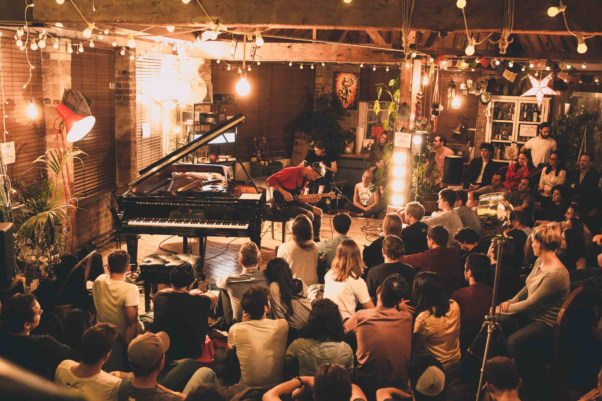

ABOUT US
The Dandy Brewing Company is Calgary's original small brewery. Although it has grown a little, it's still small at heart. We produce inspired ales, with lots of care, in small batches.Our unique approach to brewing and keen eye to every detail and fosters creativity in both our recipes andbeer styles.On site, we are pleased to offer a unique brewery experience, featuring a full service tasting room with an exquisite menu of fine dining drinking food, a curated selection of cocktails, glass pours of selected wines, and 20 taps of Dandy beers. We share a passion for not only brewing, but the people, process, experiences, and personal touches that make the real ale experience so special.

BEERS
The Dandy Line Up
The full Dandy line up of beers. Made in small batches, available province-wide
Dandy in the Underworld
5.5%ABV
The main Dandy. This beer is our most popular offering and available everywhere, all the time. A light bodywith notes of coffee, chocolate, and light roast, this traditional Oyster Stout is sure to be a favourite. Pairs well with oysters, fish, and other salty snacks
Une Vieille Maitresse
4.5%ABV
This farmhouse ale is available year round in the bottle and draught. A table strength beer brewed with rye and french saison yeast. It is light, refreshing, with a touch of spice and saison character. Brewed once as alimited edition, we can't seem to shake this old mistress.
The Dandy Wild Sour Ale
7.3%
A bold, malty sour ale soured with lactobacillus and fermented with a wild yeast strain. An upfront sournessis balanced with wild yeast character for a rich sour experience.
The Golden Brown Dandy
6%ABV
Our English Pale ale. This beer is a low-carbonation ode to real-ale. A smooth malt body is balanced with a highly intensive hops schedule to bring forward a great tasting beer to reward all ale lovers! Available only in bottles and casks.
Pairs well with meats, rich sauces and hard, aged cheese
Seasonal Releases
Four exciting beers a year with wide release. Look for them when the weather begins to turn.
Baltus van Tassel: Cherry Sour
7% ABV
Fall
An American Style Cherry Sour. A rich brown American Brown sour brewed with Sweet and Tart cherries for the perfect accompaniment to shorter days and colder weather.
In the Bleak Midwinter: Black IPA
6.5%ABV
Winter
A fruity Black IPA. With only a kiss of roast, this black IPA is fresh and juicy but dark as the coldest days of winter. Citra and Mosaic are late hop additions to avoid the bitterness and focus on aroma
The Jungle Bird: Tropical Dark Sour
5%ABV
Spring
An homage to the classic Tiki cocktail. This beer has notes of demerara sugar, bitter lime, tropical pineapple coming together for a refreshing sour that is like no other.
Bright Young Things: Hopped Wheat Ale
5.5%ABV
Summer
English Summer Ale. A style developed during a late 70’s heat wave in England, this beer is designed to refresh in the hot summer sun. Dry, with a touch of wheat and toasted Victory malt, it is balanced with a touch of bitterness and a sweet citrus aroma. Patios, BBQ’s, and friends all pair perfectly with this beer!
The Tasting Room
Serving 20 taps of exceptional craft beer, fine drinking food, cocktails and wine
What We Do
The Dandy Brewing Company and Tasting Room is a unique experience located in the heart of Ramsay. The modern space features 20 taps of Dandy Beers (maybe a few rad guest taps), a curated cocktail list featuring local spirit, a daily selection of top quality wines available by the glass.
Making the experience even better is a menu of drinking food, rooted in the fine dining. Chef Merritt Gordon has put together something amazing, enhancing the already indulgent experience
Open Daily for lunch and dinner service, as well as brunch on weekends.
More information
Hours. Snacks. Tours.
Tasting Room Hours
Hours
Monday: Closed
Tuesday: 11:30am-10pm
Wednesday 11:30am-10pm
Thursday 11:30am-10pm
Friday 11:30am-Midnight
Saturday 10am-Midnigh
Sunday 10am-8pm
Please note: Due to AGLC regulations, we are not able to fill growlers or provide offsales at this time
Restaurant
Offering a full lunch, dinner and brunch menu, the Tasting Room brings a unique drinking menu to the craftbeer experience.
With snacks, plates, desserts, and a fresh oyster bar, the menu is meant to be shared among friends and lovers. Always evolving, the menu is perfectly paired with all things Dandy
Vegetarian and Vegan options available. Please ask your server
Open for Lunch, Dinner, and Brunch.
Shop
Dandy is pleased to offer a small offering of merchandise.
Along with T-Shirts and hats, we are pleased to offer numbered silk screen prints, designed by Artists we are so pleased to call friends, and printed by the team at Burnt Toast Studios. We are also excited to announce a collaborative with North American Quality Purveyors on a line of T-shirtsand baseball caps. We worked together to design custom cut shirts and hats, that fit a Dandy perfectly.
Where to find us
Looking to pick up a bottle or pint?
Below you will find a list of Calgary establishments carrying Dandy beers. You can check out www.liquorconnect.com to find all retail accounts carrying our beers across the province
On Tap
The Dean House
National 17th Ave
National 10th Ave
Charban
Broken City
Craft Beer Market
Hayden Block
Bo's(Red Deer)
Craft(Edmonton)
The Commons(Edmonton-Rotating)
Arcadia(Edmonton-Rotating)
Cilantro and Chive (Lacombe-Rotating)
Stores
NW
Oak and Vine
Brentwood Liquor Depot
Vine Styles: Kensington
Silver Springs Liquor
Highlander Liquor North Hill
Kensington Liquor Cella
Point McKay Winestore (Growler bar)
NE
Craft Cellars
BK liquor Bridgeland
Forest Lawn Co-op
The Beer Vault
SW
Vine Arts
Dominion Bottle shop
5Vines
Willow Park Wine and Spirits
All Calgary Co-op Locations
Crowfoot Wine and Spirits Altadore
The Cellar Wine Store
Vine Styles: Design District
Highlander Liquor Seton
Oak and Vine Inglewood
Heritage Wine and Spirits
Britannia Wine Merchants
Bin 905
J Webb (17th ave)
J Webb (Glenmore Landing)
Altadore Liquor Depot
SE
Zyn Inglewood
Sundance Wine Market
Oak and Vine Inglewood
Cork Fine Wines
J Webb (Calgary Farmer’s Market
BK Liquor
The Brewer's Apprentice
Restaurants/Bars with bottles:
Rodney’s Oyster Bar
Cannibale
Pizza Bobs (Kensington)
Shiki Menya (Bridgeland)
Smuggler’s Inn
Charcut Roast House
Proof Cocktail Bar
Bo's (Red Deer)
Cilantro and Chive (Lacombe)
Artist in Residence
The Program
The Dandy Brewing Company Artist in Residency is a program aimed at visual artists in Alberta
Dandy has long valued the visual arts and this program is designed to support those who make the Albertascene so exciting.
The program provides a small stipend every month, for 6 months. Throughout the 6 months Artists are alsoencouraged to collaborate with the Dandies on events and projects!
Current Artist
Jacqueline Huskisson (http://jacquelinehuskisson.com)
Past Artists
Chris Pecora (Calgary, AB) (http://chrispecora.com/)May-October 2017
Bio (courtesy of website):
Originally from a sleepy mountain town, I now run my graphic design and illustration studio from Calgary, Canada. My focus is creating thoughtful, memorable work for brands, publications, and agencies across North America. (And other places, too!
Kelsey Fraser (Calgary, AB)
November 2016-April 2017
Story
Even dandies have origins.
Chef. Chemist. Teacher. Business.
The story goes back. Two high-school classmates begin a business, they graduated and went their separate ways. They cross paths again years later to discuss an interest, and a passion
In the fall of 2013, the Alberta Gaming and Liquor Commission made sweeping changes to the brewing industry in Alberta, allowing small craft breweries to exist. It came at a perfect time. For years Ben Leon, a teacher, and Dylan Nosal, a chef, had been growing their home-brew experience, not only in size but also in knowledge. Over the course of a few years of practice, learning, and many batches, they began brewing exceptional beers on a home-built 1BBL brewhouse.
While honing skills, the two were developing a keen taste for the growing selection of Craft beer flooding into Alberta. Much of their guidance came from Matt Gaetz, a veteran of the liquor business in Alberta, and a close friend. Between the three of them, the topic of starting something amazing often came up over beers and brewing. They knew they wanted it, they just weren't sure it was possible under old laws. Changes in law meant it was possible.
Discussion after discussion, batch after batch, ideas developed into plans. What it always boiled down to was that the brewery would have to be exciting, forward thinking, and outside the traditional thought box for breweries in the province. Exciting beer styles, quality ingredients, and attention to every detail of production.
Cue the return of Derek Waghray, a high-school friend studying chemistry on the West coast. On his return to Calgary, and with a new-found interest in brewing and craft beer, he got in touch with an old high schoolfriend. A home brew batch later, and a discussion of wild dreams, he was added to the group. He was a much needed addition bringing expertise in laboratory process and a deep understanding of the science behind the beer.
When the laws were officially changed in December 2013, the four Dandies moved quickly to hammer out the final details for The Dandy Brewing Company.
In January 2014 the Dandy Brewing Company was incorporated. April 2014 the lease was signed. June 2014 the brewhouse was built. August 2014 the brewing began. September 2014 the beer hit the shelves. April 2015 the first draught accounts started pouring. November 2015 the Tap Room opened. January 2016a three-fold expansion of capacity was completed.
April 2018 saw the opening of the The Dandy Brewing Company and Tasting Room, a new production facility and full service tasting room located in the heart of Ramsay, Calgary. Fine Dining drinking food. Dandy beers. Cocktails. wine. The full Dandy experience.
This story is just beginning.
Contact Us
Questions. Comments. Concerns.
The Dandy Brewing Company
2003 11th Street SE, Calgary, AB
*please note, at this time, due to our limited space, we do not take reservations, nor do we book private tours in the tasting room.
Hours:
Tuesday: 11:30am-10pm
Wednesday 11:30-10pm
Thursday 11:30-10pm
Friday 11:30-Midnigh
Saturday 10am-Midnigh
Sunday 10am- 8pm
Footer
The Dandy Brewing Company and tasting room, 2003 11 Street SE, Calgary, AB, T2G 3G6, Canada
Photos by Arif Ansari and Chris Wideman
Twitter: https://twitter.com/DandyAlesYYC
Facebook: https://www.facebook.com/dandyalesyyc/
Instagram: https://www.instagram.com/dandyalesyyc